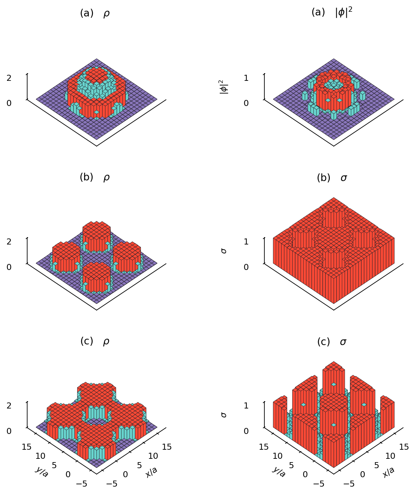
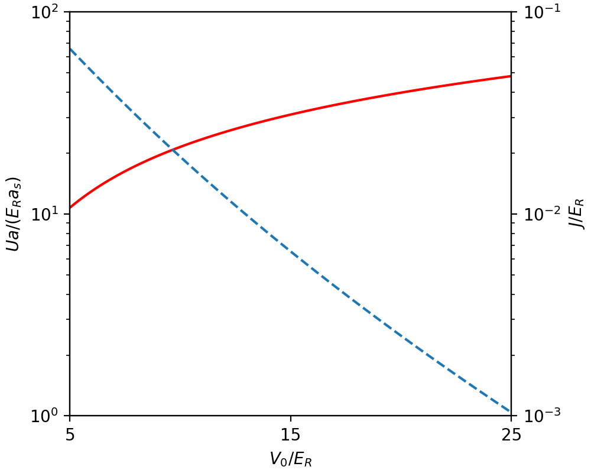
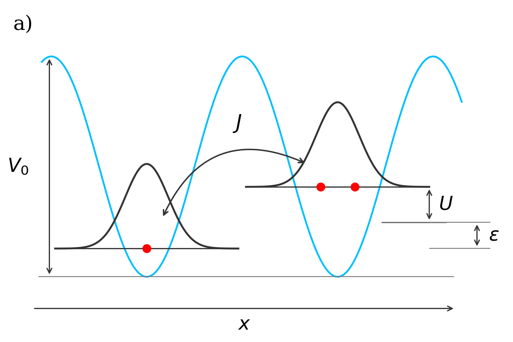
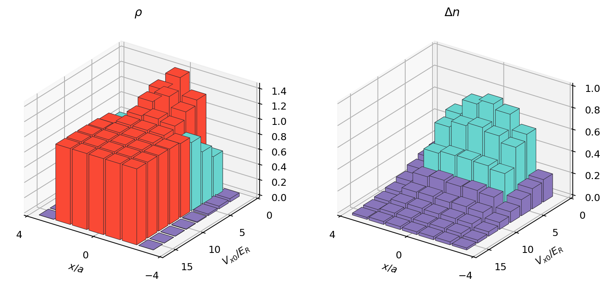
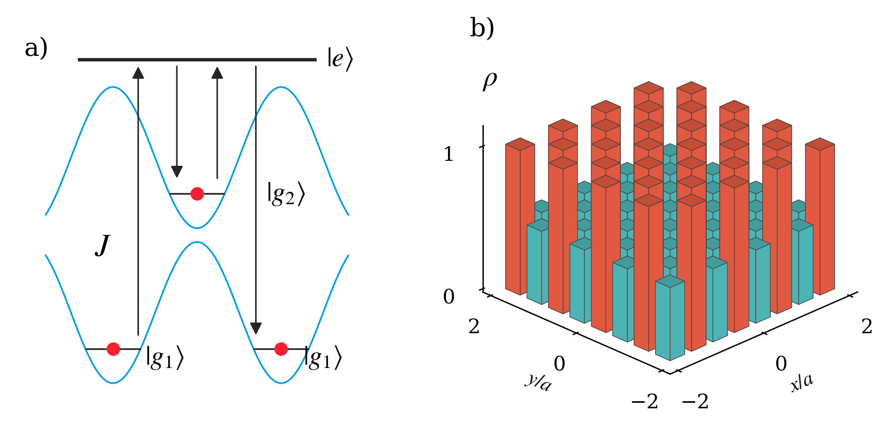

玻色冷原子笔记
《Cold bosonic atoms in optical lattices》
把超冷原子装进光学晶格，用激光调节玻色–哈伯德模型的参数，从而实现和研究超流到莫特绝缘体的量子相变。
物理模型
场波函数形式
$$ \begin{aligned} H &= \int d^3 x\psi^\dagger(\mathbf{x}) \left( -\frac{\hbar^2}{2m}\nabla^2 + V_0(\mathbf{x}) + V_T(\mathbf{x}) \right) \psi(\mathbf{x}) \\ &\quad + \frac{1}{2}\frac{4\pi a_s \hbar^2}{m} \int d^3 x,\psi^\dagger(\mathbf{x})\psi^\dagger(\mathbf{x})\psi(\mathbf{x})\psi(\mathbf{x}) \end{aligned} $$
其中第一项是单粒子能量，包含动能，光学格点势$V_0$（小碗）、外部束缚势$V_T$（大碗）
第二项是两体相互作用，$g=\frac{4\pi a_s\hbar^2}{m}$可以看作耦合常数，前面的1/2是为了双粒子防止重复计算
当原子主要处于最低能带时，可以用各格点附近的局域波函数展开场算符
$$\psi(x)\approx\sum_i w_i(x)b_i$$
w描述局域模式在空间中的形状，b表示从这个模式中湮灭一个原子
关于Wannier函数的来源（固体物理）
解单粒子哈密顿量$h = -\frac{\hbar^2}{2m}\frac{d^2}{dx^2} + V(x)$得到布洛赫态，再把同一条能带中不同准动量的布洛赫态组合起来，才能得到 Wannier 函数
$$ w_{n,R}(x) = \frac{1}{\sqrt{N}} \sum_q e^{-iqR} \psi_{nq}(x)$$
深晶格使用二阶近似，最低能带的 Wannier 函数主要集中在势阱底部，形如谐振子势
$$ w(x) \approx \frac{1}{\pi^{1/4}\sqrt{\ell}} \exp\left( -\frac{x^2}{2\ell^2} \right), \quad \ell = \sqrt{\frac{\hbar}{m\omega}}. $$
只考虑基态的时候获得了高斯型函数。但是这只是大致形状，实际上对于周期性晶格，真实 Wannier 函数也会偏离纯高斯。
外场势由两束反向传播的激光形成驻波提供。
$$I(x) \propto |E(x)|^2 \propto \cos^2(kx)$$
更换光场空间分布，就能得到其他形状的势。
代入原式后，单粒子哈密顿量（动能+光学周期势）变为隧穿项，系数为J。第二项相互作用项变为系数U的格点内相互作用。外部束缚势变为格点能量偏移
代入推导过程
把动能和光晶格势记为$h_{lat}=-\frac{\hbar^2}{2m}\nabla^2+V_0(x)$，然后把wannier函数代入到哈密顿第一行中，把双重求和以及粒子数算符提出来
$$ \begin{aligned} H_1 &= \int d^3 x \left[ \sum_i w_i^* b_i^\dagger \right] (h_{\text{lat}} + V_T) \left[ \sum_j w_j b_j \right] \\ &= \sum_{i,j} \left[ \int d^3 x w_i^*(\mathbf{x})(h_{\text{lat}} + V_T) w_j(\mathbf{x}) \right] b_i^\dagger b_j. \end{aligned} $$
接下来按求和模式去分类，首先看单格点，$i=j$
俘获势在格点附近的变化很缓慢，视作常数
$$ \epsilon_i = \int d^3 x~V_T(\mathbf{x}) \left| w_i(\mathbf{x}) \right|^2 \approx V_T(\mathbf{x}_i). $$
单粒子哈密顿量$h_{lat}$由于对称性，在每个格点处都相同，总粒子数固定时，只会给出常数的能量平移，可以不管他
然后看格点间，由于使用了wannier函数，所以只考虑最近邻的overlap。定义
$$-J=\int d^3x~w_i^*(x)h_{lat}w_j(x)$$
同一条键的两个方向都来自原来的双重求和。比如格点1,2之间有$b_1^\dagger b_2$和$b_2^\dagger b_1$两项。因此，约定$\braket{i,j}$中每对最近邻只数一次，第一行就整理成
$$ H_1 \approx -J \sum_{\langle i,j \rangle} \left( b_i^\dagger b_j + b_j^\dagger b_i \right) + \sum_i \epsilon_i \hat{n}_i$$
下面处理包含四重求和项的相互作用项：
$$H_{int}=\frac{g}{2}\sum_{i,j,k,l}\left[\int d^3x~w_i^*w_j^*w_kw_l\right]b_i^\dagger b_j^\dagger b_k b_l$$
Wannier 函数高度局域时，同格点的项占主导，只保留同格点的积分
$$H_{int}\approx\frac{U}{2}\sum_i b_i^\dagger b_i^\dagger b_i b_i,\quad U=g\int d^3x|w_i(x)|^4$$
对一个具有n个玻色子的格点$\ket{n}$，先作用两次下降算符，再作用两次上升算符，最后得到了系数$n(n-1)$，所以我们在粒子数表象下直接把这$H_{int}$记作$U\frac{n(n-1)}{2}$，最后就得到了如下的模型：
玻色–哈伯德模型
$$H = -J \sum_{\langle i,j\rangle} \left(b_i^\dagger b_j + b_j^\dagger b_i\right) + \frac{U}{2}\sum_i n_i(n_i-1) + \sum_i \epsilon_i n_i$$
$$\hat{n}_i=b_i^\dagger b_i,\quad [b_i,b_j^\dagger]=\delta_{ij}$$
J使原子在格点间运动，促使粒子离域并建立相位相干。排斥相互作用$U>0$使同一格点上的多原子占据付出能量，使得粒子趋于均匀排布，抑制粒子数涨落（这是因为当总粒子数固定时，第二项平均值和粒子数方差正相关）。
| 性质 | 超流态 | 莫特绝缘态 |
|---|---|---|
| 格点之间的相干性 | 存在长距离相干；具体形式依维度等条件而异 | 长距离相干受抑制 |
| 单个格点的粒子数 | 有涨落 | 接近固定整数，涨落较小 |
| 对化学势微小变化的密度响应 | 可压缩 | 理想均匀体系在莫特区内不可压缩 |
| 低能激发 | 存在无隙集体激发 | 存在粒子、空穴相关能隙 |
个人感觉可以把他类比为谐振子中的相干态和粒子数态。
量子相变：超流态与莫特绝缘态之间的转化
把温度保持在接近零的水平，通过改变U/J，使系统的基态从一种性质转变成另一种性质。
通过调节激光，控制原子“在格点间离域”与“避免同格点占据”的竞争，从而制备不同的多体量子态。
玻色–哈伯德模型预言：在低温下，随着格点内相互作用U（源于原子之间的排斥）与隧穿矩阵元J的比值增大，系统会从超流（SF）相转变为莫特绝缘（MI）相。在光晶格中，可以通过改变激光强度来调节这一比值
数值计算跃迁耦合强度（图1）
这一部分（主要结果是图1b）建立了激光参数与多体模型参数之间的定量联系。
数值解薛定谔方程求基态能带
计算了哈密顿量的最低本征值以及其对应的态傅里叶系数
下文中$v$或$V_0$的意义是光学势能强度，在图1b中充当自变量的角色
分离变量
$$w(\vec x)=w(x)w(y)w(z)$$
记反冲能量$E_R=\hbar^2 k^2/2m$。把单格点、单方向的哈密顿量写出来，注意到周期势在x方向上表现为$V_0\sin^2(kx)$
$$h_{1d}=-\frac{\hbar^2}{2m}\frac{d^2}{dx^2}+V_0\sin^2(kx)$$
令$s=x/a$、$v=V_0/E_R$，其中$a=\pi/k$，整理后得到
$$\frac{h_{1d}}{E_R}=-\frac{1}{\pi^2}\frac{d^2}{ds^2}+v\sin^2(\pi s)$$
（相当于把物理距离按照倒格子缩放了）根据布洛赫定理把波函数写成一组平面波的叠加，设无量纲准动量$t=qs/2\pi\in[-1/2,1/2]$写作
$$\phi_t(s) = \sum_{n=-M}^{M} c_n(t)e^{2\pi i (n+t)s}$$
（其中t表示准动量，n表示模式或者编号。t取值在第一布里渊区内。n取值从-M到M是对无穷级数的人工截断，方便数值计算）这是来源于布洛赫定理
$$\psi_q(x)=e^{iqx}u_q(x),\quad u_q(x+a)=u_q(x)$$
然后对周期函数$u_q$使用复数形式傅里叶级数展开后得到的
布里渊区这里的细节：准动量相差一个倒格矢G时，可以用同一个准动量标签来表示
$$\psi_q(x+a)=e^{iqa}\psi_q(x)$$
如果把q换成q+G，这个平移因子仍然一样
$$e^{i(q+G)a}=e^{iqa}$$
所以可以把准动量取值限制在第一布里渊区
在这个波函数基础上，动能中的二阶导变为$4(n+t)^2$，势能用e指数的形式可以写作
$$v\sin^2(\pi s)=\frac{v}{2}-\frac{v}{4}e^{2\pi is}-\frac{v}{4}e^{-2\pi is}$$
后面两项e指数相当于对n的平移。考察薛定谔方程（级数形式）中编号为n的项构成的方程
$$\left[ 4(n+t)^2 + \frac{v}{2} \right] c_n - \frac{v}{4} c_{n-1} - \frac{v}{4} c_{n+1} = e(t) c_n, \quad e(t) = \frac{E(t)}{E_R}$$
每一个无量纲准动量t都代表着一个矩阵的本征值问题（维度是2M+1），这里就可以交给程序去做。我们把第一布里渊区的t都扫描一遍，对每个t都找出最低的能量本征值$e_0(t)$和对应的本征向量$c_n(t)$，这个代表波函数傅里叶系数，进而得到了最低能带及布洛赫态。
注意到这个矩阵是实对称矩阵，所以可以选择一组实本征向量。对于这里v>0的正弦平方势，矩阵相邻的非对角元素是-v/4<0，最低本征向量的分量可以取成全部同号。因此，用$c_0(t)>0$就能选出一致的实本征向量。
这里来写一下为什么最低本征向量的分量可以取成全部同号，观察归一化本征态的能量表达式
$$E[c] = \sum_n \left[ 4(n+t)^2 + \frac{v}{2} \right] c_n^2 - \frac{v}{2} \sum_n c_n c_{n+1}$$
后一项的系数是负的，它意味着在系数绝对值保持不变情况下，同号能降低能量，异号会提升能量。我们反证最低能量对应的本征态$\ket{c}$系数有正有负，这样可以取各项系数绝对值后构成新的态$\ket{d}$，这会使得$\braket{d|H|d}<\braket{c|H|c}=e_0$，其中$e_0$是矩阵的最小特征值
另一方面对任意的归一化矢量$\ket{a}$，对应的算符平均值$\braket{a|H|a}$都不可能小于最小本征值，产生矛盾。所以最小能量对应的本征值一定没有异号分量，那么就可以取全非负系数。
理论能带表达式
当我们使用wannier函数进行近似时，只考虑格点内以及近邻格点之间的相互作用，那么J就是近邻格点相互作用系数
$$ -J = \langle j+1 \mid h_{\text{lat}} \mid j \rangle = \int dx, w_{j+1}^*(x) \left[ -\frac{\hbar^2}{2m}\frac{d^2}{dx^2} + V_0 \sin^2(kx) \right] w_j(x). $$
$$ E A_j = E_{\text{loc}} A_j - J A_{j-1} - J A_{j+1}. $$
对准动量为q的布洛赫态，格点振幅满足$A_j\propto e^{iqja}$所以格点的平移会多出$e^{\pm iqj}$的系数。带回去约掉$A_j$后得到
$$ E(q) = E_{\text{loc}} - J e^{-iqa} - J e^{iqa} = E_{\text{loc}} - 2J\cos(qa)$$
在最近邻近似下，最低能带的带宽就是4J。
接下来要做的事情就是从数值计算得出的最低能带中“读取”J的值。我们把理想模型（最近邻跃迁）变量代换一下$t=qa/2\pi$，写成更接近数值解的形式，那么理论表达式就是
$$ e_0(t) = \frac{E_0(q)}{E_R} = \frac{E_{\text{loc}}}{E_R} - 2\frac{J}{E_R}\cos(2\pi t)$$
数值拟合求耦合J
通过对数值能带求三角函数内积的方式提取系数
那么现在我们有一条数值计算出的能带，如何提取三角函数前的系数？答案类似于傅里叶变换，也就是做内积。数值能带只是一系列离散的数据点，所以逐点求和代替连续积分
$$ \frac{J}{E_R} = -\int_{-1/2}^{1/2} e_0(t)\cos(2\pi t)dt \approx -\frac{1}{N_q}\sum_{m=1}^{N_q} e_0(t_m)\cos(2\pi t_m). $$
其中$e_0$是指定能量v之后数值解出的能带，所以J对v的依赖蕴含在$e_0$中，可以根据这个式子算出J关于v的曲线
图 1b 则用整条数值能带的第一余弦分量提取J，这样即使能带还有一点更远邻跃迁带来的修正，也能单独读出最近邻的贡献。
数值计算格点间相互作用强度U
通过对基态波函数的数值解逆傅里叶变换，然后进行积分
波函数是由wannier函数进行类似傅里叶级数的方式叠加产生的，所以我们对wannier函数逆傅里叶变换就得到了波函数。具体而言可以把所有的波函数等幅相加就得到了原点处的wannier函数
$$ \widetilde{w}(s) \approx \frac{1}{N_q} \sum_{m=1}^{N_q} \sum_{n=-M}^{M} c_n(t_m) e^{2\pi i (n+t_m)s}. $$
这里使用的是先前数值解的本征向量(归一化)，选取实且非负的本征向量。物理坐标下的一维函数为$w_{\text{1D}}(x) = a^{-1/2}\widetilde{w}(x/a)$
文中使用的是三个方向对称的三维可分离晶格，所以前面推到的相互作用积分可以写作
$$U =g\int d^3x|w_i(x)|^4= \frac{4\pi\hbar^2 a_s}{m} \left[ \int dx|w_{\text{1D}}(x)|^4 \right]^3$$
设$I=\int ds|\tilde{w}(s)|^4$，则一维物理坐标下的积分为$I/a$，再用$E_R=\hbar^2\pi^2/2ma^2$得到左纵轴的量
$$\frac{U}{E_R}\frac{a}{a_s} = \frac{8}{\pi} I^3$$
使用先前推出的$\tilde{w}(s)$即可算出I的数值解，进而得到U的变化曲线
图1的信息
代码放在读论文文件夹里，最后利用python可以复现1b原图

把晶格加深，会同时改变两个参数（参考图1b）：
$$V_0\uparrow \quad\Longrightarrow\quad J\downarrow,\qquad U\uparrow.$$
后面我们根据平均场理论知道n=1的莫特绝缘相，相变发生在$\frac{U}{zJ}\approx 5.8$，可以反找出对应的外场幅度

对于1a这张图，光晶格势是三角函数，局域模式采用高斯包络（对应谐振子近似势），只是一个示意图
近似与可行性讨论
势阱底部谐振子近似
光晶格势由三角函数给出
$$ V_0(\mathbf{x}) = \sum_{j=x,y,z} V_{j0} \sin^2(k x_j)$$
原点底部附近利用线性近似去近似三角函数，最终得到了二次谐振子势
$$ V_0(\mathbf{x}) \approx \sum_{j} V_{j0} k^2 x_j^2$$
与标准的谐振子模型相比较就可以得出第j个方向的频率
$$ \nu_j = \sqrt{\frac{2 V_{j0} k^2}{m}} = \frac{\sqrt{4 E_R V_{j0}}}{\hbar}$$
在谐振子势下，只考虑基态，那么wannier函数每个方向都是高斯型的。对高斯函数做积分可以得到结果
$$ w_j(x_j) = \frac{1}{\pi^{1/4}\sqrt{a_{j0}}} \exp\left( -\frac{x_j^2}{2 a_{j0}^2} \right), \quad a_{j0} = \sqrt{\frac{\hbar}{m \nu_j}}. $$
$$U =g\int d^3x|w_i(x)|^4=\sqrt{\frac{2}{\pi}} \frac{\hbar^2 a_s}{m a_{x0} a_{y0} a_{z0}}$$定义几何平均
$$ \bar{a}_0 = (a_{x0} a_{y0} a_{z0})^{1/3}, \quad \bar{\nu} = (\nu_x \nu_y \nu_z)^{1/3}. $$
可以把耦合强度写为更简洁的形式
$$ U =\sqrt{\frac{2}{\pi}}\hbar \bar{\nu}\frac{a_s}{\bar{a}_0}. $$
微扰条件及可行性
散射强度$a_s$描述散射后波的变化尺度，或者粒子宽度（比如刚性原子散射的散射强度就等于原子半径，它在模型中体现在跃迁强度系数g中。我们要求散射强度$a_s$远小于基态波函数特征宽度$a_{j0}$，并且单个势阱波包宽度远小于势阱间距$a$.格点i上存在$n_i$个粒子时产生的格点内相互作用能，必须远小于激发到下一能带所需的能量.
$$ a_s \ll a_{j0} \ll \frac{\lambda}{2},, \quad \Delta E_i = \frac{1}{2} U n_i (n_i - 1) \ll \hbar \nu_j$$
满足这些条件之后就可以使用微扰理论计算
对于n=1的莫特绝缘相，绝缘态与超流态之间的相变临界点在
$$\frac{U}{zJ}\approx 5.8$$
不同维度的晶格会改变配位数z，然后参考我们先前给出的1b图，关注U与J也就是两条线的比值，恰好在临界点时，可以读出$v$的大小。这里作者估算了一些常见的临界晶格深度大小，接着议论了原子寿命，来说明实验确实可以做到（可行性检验）。
作者接下来主要研究的是光晶格中莫特绝缘态的基态结构，以及怎样用激光控制、识别这些结构。
平均场计算相的空间分布（图2）
计算了Fock基下的系数，便于可视化粒子数与相干性在空间中的分布
计算方法
在假定临近场的情况下最小化单个格点，然后不断迭代收敛
作者对二维构型进行了平均场计算，并对一维玻色–哈伯德哈密顿量进行了精确对角化，以展示光晶格中莫特绝缘相的形成，尤其是非均匀情况下的形成过程。
平均场计算采用基态波函数的Gutzwiller假设
$$ |\Psi_{\text{MF}}\rangle = \prod_i |\phi_i\rangle, \quad |\phi_i\rangle = \sum_{n=0}^{\infty} f_n^{(i)} |n\rangle_i $$
其中$\ket{n}$表示格点i上有n个原子的Fock态。总粒子数的平均值为
$$\braket{\hat{N}}=\sum_i\sum_n n|f_n^{(i)}|^2$$
接下来使用拉格朗日乘数法，在平均粒子数不变的情况下寻找能量的最小值，也即通过调节系数$f_n^{(i)}$使下列表达式最小化
$$ \langle \Psi_{\text{MF}} \mid H \mid \Psi_{\text{MF}} \rangle - \mu \left\langle \Psi_{\text{MF}} \middle| \sum_{i} \hat{n}_i \middle| \Psi_{\text{MF}} \right\rangle $$
这相当于在温度T=0、化学势为$\mu$的巨正则系综中进行计算。当解在每个格点上都趋于单一 Fock 态时，表明体系处于莫特绝缘相。
莫特绝缘相的一个特征是，每个格点的占据数（密度）$\rho_i=\braket{\hat{n}_i}$取整数值，同时粒子数涨落满足$\sigma_i^2=\frac{\braket{\hat{n}_i^2}-\braket{\hat{n}_i}^2}{\braket{\hat{n}_i}}\to0$。
超流态的特征是由Fock态叠加构成的解可以产生非零的平均场$\phi_i=\braket{b_i}\neq0$
注：对于单个Fock态，湮灭算符b的平均值为0，因为不同的粒子数态相互正交。类似于谐振子的相干态，不同的Fock态相干叠加后可以产生非零的平均场
那么它和超流有什么联系呢？注意到在乘积态近似中，不同格点乘积的期望可以拆分为期望的乘积
$$ \langle b_i^\dagger b_j \rangle = \langle b_i^\dagger \rangle \langle b_j \rangle = \phi_i^* \phi_j, \quad i \neq j $$
接下来将平均场写成带辐角的形式$\phi_i = |\phi_i| e^{i\theta_i}$然后代入隧穿
$$ -J \langle b_i^\dagger b_j + b_j^\dagger b_i \rangle = -2J |\phi_i| |\phi_j| \cos(\theta_j - \theta_i). $$
因此，非零平均场允许格点之间建立相位相干，作者用它作为这套平均场理论中的超流序参量。
为了计算格点态在Fock表象下的系数，我们要对$K=H-\mu\hat{N}$最小化，其中H取玻色–哈伯德哈密顿量，那么也就是
$$ K = -J \sum_{\langle i,j \rangle} \left( b_i^\dagger b_j + b_j^\dagger b_i \right) + \sum_i \left[ \frac{U}{2} \hat{n}_i (\hat{n}_i - 1) - \mu_i \hat{n}_i \right], \quad \mu_i = \mu - \epsilon_i,. $$
不同格点会根据外部势的不同具有不同的局域化学势$\mu_i$。原化学势$\mu$对系统的影响相当于降低了粒子数门槛
通过拉格朗日乘数法求出格点态在Fock表象下的系数后，自然可以接着算密度$\rho_i$、粒子数涨落$\sigma$，超流序参量$\phi_i=\braket{b_i}$
$$ \rho_i = \langle \hat{n}_i \rangle = \sum_n n |f_n^{(i)}|^2 \quad \sigma_i^2 = \frac{\langle \hat{n}_i^2 \rangle - \rho_i^2}{\rho_i} \quad \phi_i = \langle b_i \rangle = \sum_{n=1}^{\infty} \sqrt{n}, f_{n-1}^{(i)*} f_n^{(i)} $$
然后按照空间分布作图。整数密度平台、较小的涨落和接近零的序参量，会共同标示莫特区域。
K在Fock表象取平均意义下用系数$f_n^{(i)}$写作
$$ \mathcal{E}[f] = -J \sum_{\langle i,j \rangle} \left( \phi_i^* \phi_j + \phi_j^* \phi_i \right) \\ - \sum_{i} \sum_{n} \left[ \frac{U}{2} n(n-1) - \mu_i n \right] |f_n^{(i)}|^2 $$
接下来使用平均场方法求解最小值。先固定临近平均场$\eta_i = \sum_{j \in \text{nn}(i)} \phi_j.$然后再求单格点最小值
$$ K_i^{\text{loc}} = \frac{U}{2} \hat{n}_i (\hat{n}_i - 1) - \mu_i \hat{n}_i - J \left( \eta_i b_i^\dagger + \eta_i^* b_i \right) $$
可以在Fock本征态上展开为二次型格式，进而转化为求矩阵最小本征值问题
$$ K_i^{\text{loc}} = \begin{pmatrix} 0 & -J\eta_i^* & 0 & \cdots \\ -J\eta_i & -\mu_i & -\sqrt{2} J\eta_i^* & \cdots \\ 0 & -\sqrt{2} J\eta_i & U - 2\mu_i & \cdots \\ \vdots & \vdots & \vdots & \ddots \end{pmatrix} $$
接下来就是数值方法。最开始固定一组初始平均场值$\phi_i$，据此计算最小化时的系数$f_n^{(i)}$，根据新系数重新计算$\phi_i$，重复到收敛
图2的信息
图2a使用谐振子势画了密度和超流密度，俘获势中心存在每个格点有两个原子的莫特绝缘相（$\rho=2$），其外围被每个格点有一个原子的莫特相（$\rho=1$）包围，而不同莫特绝缘区域之间存在超流环。
图2b使用了三角函数外部势画了密度和涨落。它在原有细晶格上叠加了周期为11a的较慢调制，形成较大的超晶格势阱。
图2c在2b的基础上加大了化学势，使更多位置能够容纳原子，原本分开的区域向外扩展，并在超晶格势阱之间形成连接。对应的涨落图用于辨认其中粒子数较稳定的莫特区域。随着化学势$\mu$增大，首先在超晶格势阱底部形成莫特结构。继续增大$\mu$，原子便不再局限于某个特定的超晶格势阱，而会形成连接不同超晶格势阱的桥状区域。
实验上，探测莫特态的一种标志是观察到密度–密度涨落受到抑制，这可以通过光散射直接监测。
精确解小系统（图3）
N=5的玻色-哈伯德精确对角化薛定谔方程解
图 3 中一共有 5 个原子、7 个格点。精确对角化之所以可行，是因为这个系统的多体态空间比较小。合法占据态是将5个相同玻色子分配到7个格点，总共有462个基，矩阵维度462×462，直接计算机求解本征值和本征态，有基态在占据态下叠加表达式就可以算粒子数密度和涨落。
合法占据态形如
$$\ket{0,0,2,1,2,0,0},\quad\ket{5,0,0,0,0,0,0}$$
下面计算哈密顿量分量。相互作用和俘获势给出对角元素：
$$ \langle \mathbf{n} | H | \mathbf{n} \rangle = \sum_i \left[ \frac{U}{2} n_i(n_i - 1) + \epsilon_i n_i \right]. $$
跃迁项$b_i^\dagger b_j \left| \dots, n_i, \dots, n_j, \dots \right\rangle = \sqrt{(n_i+1)n_j} \left| \dots, n_i+1, \dots, n_j-1, \dots \right\rangle$给出非对角元：
$$-J\sqrt{(n_i + 1)n_j}.$$求出矩阵的最低本征值和本征向量，就得到基态：
$$ |\Psi_0\rangle = \sum_{\alpha=1}^{462} C_\alpha |\mathbf{n}_\alpha\rangle $$
有了基态后，粒子数密度和波动都是容易得到的
$$ \rho_i = \langle \hat{n}_i \rangle = \sum_\alpha |C_\alpha|^2 n_i^{(\alpha)}\quad\Delta n=\sqrt{\braket{n_i^2}-\rho_i^2} $$
图3的信息

自变量是格点位置和格点势深度（右图看两侧应该是没有除粒子密度的标准差）
随着$V_{x0}$增大，密度清楚地表现出向$\rho=1$的莫特绝缘（MI）相的转变（阱变深了，就有格点束缚主导了粒子对称分布+小波动）
平均场理论表示相变预计发生在$V_0=7.4 E_R$时，这张图是精确对角化计算的结果，表明平均场计算方法和精确计算方法吻合很好。
失谐拉曼跃迁独立调节参数（图4）
引入新的跃迁机制，用拉曼耦合单独调节跃迁参数J。同时拉曼失谐会导致部分格点的能量平移，最后形成棋盘状分布。
前面只有一个主要调节量$V_0$。把晶格加深，会同时改变两个参数（参考图1b）：
$$V_0\uparrow \quad\Longrightarrow\quad J\downarrow,\qquad U\uparrow.$$
作者想让两者能够更独立地控制。
拉曼过程
记两个内部态为$\ket{a}=\ket{g_1},\quad\ket{b}=\ket{g_2}$，令能量差为$\hbar w_{ba}$。把这两个态在势阱内交替排布
一次拉曼过程原子净获得的能量为$\hbar w_L$，共振时能量匹配内部态间隔。能量单位的双光子失谐为
$$\delta=\hbar(w_L-w_{ba})$$
失谐就是激光频率与原子跃迁所需的共振频率之间的差。拉曼实验可以让每束光都远离各自的单光子共振，同时让两束光的频率差满足双光子共振。
先忽略空间运动，把$E_a$选作零点。实验室参考系中的内部态哈密顿量可以写成
$$ H_{\text{lab}} = \begin{pmatrix} 0 & -\dfrac{\hbar\Omega_{\text{eff}}}{2} e^{i\omega_L t} \\[8pt] -\dfrac{\hbar\Omega_{\text{eff}}^*}{2} e^{-i\omega_L t} & \hbar\omega_{ba} \end{pmatrix} $$
其中非对角项的相位因子来自于复交流电场的相位差，$\frac{\hbar\Omega_{eff}}{2}$是人为定义的有效跃迁振幅
接下来做一个变量代换，换到旋转参考系，关注激光旋转以外的振幅
$$ |\Psi(t)\rangle = \alpha(t)|a\rangle + e^{-i\omega_L t} \tilde{\beta}(t)|b\rangle. $$
旋转坐标系下的哈密顿量矩阵写作
$$ H_{\text{rot}} = \begin{pmatrix} 0 & -\hbar\Omega_{\text{eff}}/2 \\ -\hbar\Omega_{\text{eff}}^*/2 & -\delta \end{pmatrix} $$
从中提取出非对角的有效耦合
$$ H_R = -\frac{\hbar}{2} \left( \Omega_{\text{eff}} |a\rangle\langle b| + \Omega_{\text{eff}}^* |b\rangle\langle a| \right) $$
用场的语言写作
$$ H_R = -\frac{\hbar}{2} \int d^3 x \left[ \Omega_{\text{eff}}(\mathbf{x}) \psi_a^\dagger(\mathbf{x}) \psi_b(\mathbf{x}) + \text{h.c.} \right] $$
本文的J主要由这一项产生。而对角项$-\delta$则进入了单粒子能量的哈密顿量部分
$$ \begin{aligned} H_{\text{sp}} &= \int d^3 x\psi_a^\dagger \left[ -\frac{\hbar^2 \nabla^2}{2m} + V_a + V_T \right] \psi_a \\ &\quad + \int d^3 x \psi_b^\dagger \left[ -\frac{\hbar^2 \nabla^2}{2m} + V_b + V_T - \delta \right] \psi_b. \end{aligned} $$
相互作用项也是定义好的耦合常数直接写出来
$$ \begin{aligned} H_{\text{int}} &= \frac{g_{aa}}{2} \int d^3 x(\psi_a^\dagger)^2 \psi_a^2 \\ &+ \frac{g_{bb}}{2} \int d^3 x (\psi_b^\dagger)^2 \psi_b^2 \\ &+ g_{ab} \int d^3 x \psi_a^\dagger \psi_b^\dagger \psi_b \psi_a. \end{aligned} $$
总哈密顿量（已消去中间态$\ket{e}$并在合适的旋转坐标系下）写为上面三个部分的和
$$ H = H_{\text{sp}} + H_R + H_{\text{int}}. $$
展开两个场算符
$$ \psi_a(\mathbf{x}) \approx \sum_i w_{a,i}(\mathbf{x}) a_i \quad \psi_b(\mathbf{x}) \approx \sum_j w_{b,j}(\mathbf{x}) b_j. $$
拉曼耦合项：只保留相邻势阱之间的耦合，由对称性取为一致$J_{ij}=J$
$$ \begin{aligned} H_R &= -\frac{\hbar}{2} \int d^3 x\Omega_{\text{eff}}(\mathbf{x}) \left[ \sum_i w_{a,i}^* a_i^\dagger \right] \left[ \sum_j w_{b,j} b_j \right] + \text{h.c.} \\ &= - \sum_{i,j} \underbrace{\left[ \frac{\hbar}{2} \int d^3 x w_{a,i}^* \Omega_{\text{eff}} w_{b,j} \right]}_{J_{ij}} a_i^\dagger b_j + \text{h.c.}\\ &\approx - \left( J \sum_{\langle i,j \rangle} a_i^\dagger b_j + \text{h.c.} \right) \end{aligned} $$
单粒子项的能量不展开，合起来用场写就得到
$$ H_{\text{sp}} \approx \sum_i \epsilon_i a_i^\dagger a_i + \sum_j (\epsilon_j - \delta) b_j^\dagger b_j. $$
其中失谐的代入使用到了wannier函数的正交归一性质。这里还采用了论文明确使用的近似，忽略同一内部态势阱之间的直接隧穿，让相邻a,b格点间的拉曼辅助跃迁成为主要耦合。
同组分的高阶相互作用给出U
$$ U_{aa} = g_{aa} \int |w_{a,i}|^4 d^3 x, \quad U_{bb} = g_{bb} \int |w_{b,j}|^4 d^3 x. $$
双势阱交叉项
$$ H_{ab} \approx \sum_{i,j} \underbrace{\left[ g_{ab} \int d^3 x|w_{a,i}|^2 |w_{b,j}|^2 \right]}_{U_{ab}^{ij}} a_i^\dagger a_i b_j^\dagger b_j. $$
只保留最近邻项，并取相同的耦合强度
$$ H_{ab} \approx U_{ab} \sum_{\langle i,j \rangle} a_i^\dagger a_i b_j^\dagger b_j. $$
总哈密顿量在场算符下写作
$$ \begin{aligned} H &= -\left( J \sum_{\langle i,j \rangle} a_i^\dagger b_j + \text{h.c.} \right) + \sum_i \epsilon_i a_i^\dagger a_i + \sum_j (\epsilon_j - \delta) b_j^\dagger b_j \\ &\quad + \frac{U_{aa}}{2} \sum_i (a_i^\dagger)^2 a_i^2 + U_{ab} \sum_{\langle i,j \rangle} a_i^\dagger a_i b_j^\dagger b_j + \frac{U_{bb}}{2} \sum_j (b_j^\dagger)^2 b_j^2. \end{aligned} $$
哈密顿量的第一项描述拉曼过程诱导的相邻晶格单元之间的跃迁，其耦合强度为
$$ J = \frac{1}{2} \int d^3 x w_a(\mathbf{x})^* \Omega_{\text{eff}}(\mathbf{x}) w_b(\mathbf{x} - \lambda/4) $$
后面的$\lambda/4$代表势阱最低部的空间位移。文中把$\hbar$内置在频率$\Omega_{eff}$中了，所以现在的$\Omega_{eff}$是能量量纲
一次拉曼过程会同时改变原子的内部态和所在位置，对应哈密顿量中的$a_i^\dagger b_j$，强度由J描述，所以借助拉曼光的调节能够更灵活地控制跃迁与相互作用的比例
计算方法
使用先前的平均场方法，分别对a、b这两类格点迭代计算Fock表象下的系数。
先将基态写作
$$ |\Psi_{\text{MF}}\rangle = \prod_{i\in A} |\phi_a\rangle_i \prod_{j\in B} |\phi_b\rangle_j $$
其中
$$ |\phi_a\rangle = \sum_{n=0}^{n_{\text{max}}} f_n^{(a)} |n\rangle \quad |\phi_b\rangle = \sum_{n=0}^{n_{\text{max}}} f_n^{(b)} |n\rangle. $$
接着把相邻格点的跃迁做平均场分解，写出哈密顿量的矩阵形式
定义序参量$\phi_a = \langle a \rangle, \quad \phi_b = \langle b \rangle$后，每个格点只与相邻的四个同类耦合，跃迁项近似为
$$ a_i^\dagger b_j \approx a_i^\dagger \phi_b + \phi_a^* b_j - \phi_a^* \phi_b. $$
给定$U_{ab}=0,\epsilon_i=0$后两类局域哈密顿量为(省略常数能量平移)
$$ \begin{aligned} h_a &= \frac{U_{aa}}{2} n_a(n_a - 1) - \mu n_a - zJ\left( \phi_b a^\dagger + \phi_b^* a \right), \\ h_b &= \frac{U_{bb}}{2} n_b(n_b - 1) - (\mu + \delta) n_b - zJ\left( \phi_a b^\dagger + \phi_a^* b \right). \end{aligned} $$
作者使用的参数是
$$ \mu = 25J, \quad U_{aa} = U_{bb} = 45J, \quad U_{ab} = 0, \quad \delta = -25J, \quad \epsilon_i = 0. $$
接下来就像之前一样给定平均场，对角化求解极小值，反复迭代的过程
有了基态后即可计算粒子数密度，然后按空间分布画图
图4的信息

拉曼失谐$\delta$会使组分$b$的化学势相对于组分$a$发生偏移。通过调节这一失谐，可以产生棋盘格状的分布。$|g_1\rangle$组分形成 MI 相，$|g_2\rangle$组分含有 SF 成分。它的特殊之处在于，两套交错格点具有不同的量子性质。
- 在莫特子晶格上，原子数接近固定整数，粒子数涨落受到抑制，平均场序参量为零。
- 在超流子晶格上，局域态包含不同粒子数的叠加，粒子数有涨落，并具有非零的超流序参量。
在作者实现的玻色–哈伯德模型中，晶格和系统参数都可以调控。这为凝聚态物理带来了一个新的研究方向，即利用量子光学的实验技术，对理论模型及其简化假设进行系统性的检验。